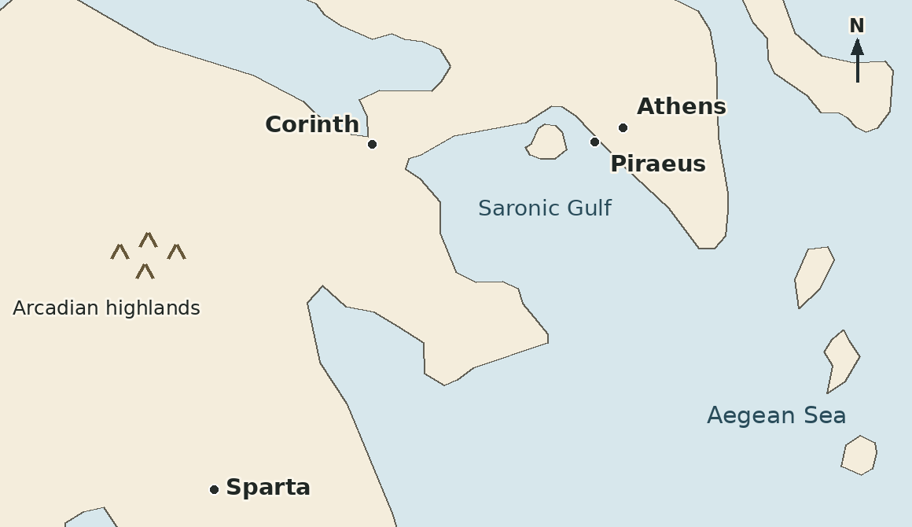

Who Had a Voice in Athens?
Use the map, the two source notes and what you know about Athens. Support each explanation with specific evidence.
Land and sea

A decision at the Pnyx
Three adults live in classical Athens. One is a male Athenian citizen who makes pottery. Another is a wealthy foreign-born resident without citizenship. The third is an Athenian woman from a citizen family. The Assembly is voting on harbour repairs.
Source A · A wartime speech
Classroom paraphrase of Pericles’ funeral speech as recorded by Thucydides, History of the Peloponnesian War, 2.37. Speaking at a public funeral during the war, Pericles praises Athens for giving many citizens a share in government. He argues that a poor citizen who can serve the city should have a chance to do so.
Source B · Who should steer?
Classroom paraphrase of Plato, Republic, Book VI, 488a–489a. In a philosophical dialogue, Socrates describes sailors competing to take the helm although they have never learned navigation. The person who studies the winds and stars is treated as useless.
A missing voice
Neither author in A or B writes from the position of the foreign-born resident or the Athenian woman in the harbour decision.
Your draft stays in this tab. Print your test or download your answers to hand them in.
Start a new copy
This clears the name and answers for this test in this tab.